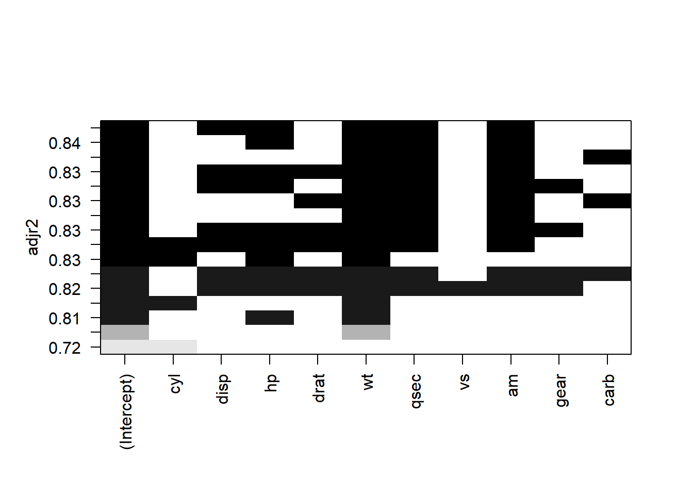

response_df <- mtcars['mpg']
predictors_df <- mtcars[, !names(mtcars) %in% 'mpg']Model Selection
DISCLAIMER: This content is copied from this post by r-statistics.co
Data Prep
Stepwise regression
lmMod <- lm(mpg ~ disp + hp + wt + qsec, data = mtcars)
selectMod <- step(lmMod)Start: AIC=66.26
mpg ~ disp + hp + wt + qsec
Df Sum of Sq RSS AIC
- disp 1 0.424 186.06 64.331
- qsec 1 9.355 194.99 65.831
- hp 1 9.827 195.46 65.908
<none> 185.63 66.258
- wt 1 91.152 276.79 77.040
Step: AIC=64.33
mpg ~ hp + wt + qsec
Df Sum of Sq RSS AIC
- qsec 1 8.988 195.05 63.840
- hp 1 9.404 195.46 63.908
<none> 186.06 64.331
- wt 1 222.834 408.89 87.527
Step: AIC=63.84
mpg ~ hp + wt
Df Sum of Sq RSS AIC
<none> 195.05 63.840
- hp 1 83.274 278.32 73.217
- wt 1 252.627 447.67 88.427summary(selectMod)
Call:
lm(formula = mpg ~ hp + wt, data = mtcars)
Residuals:
Min 1Q Median 3Q Max
-3.941 -1.600 -0.182 1.050 5.854
Coefficients:
Estimate Std. Error t value Pr(>|t|)
(Intercept) 37.22727 1.59879 23.285 < 2e-16 ***
hp -0.03177 0.00903 -3.519 0.00145 **
wt -3.87783 0.63273 -6.129 1.12e-06 ***
---
Signif. codes: 0 '***' 0.001 '**' 0.01 '*' 0.05 '.' 0.1 ' ' 1
Residual standard error: 2.593 on 29 degrees of freedom
Multiple R-squared: 0.8268, Adjusted R-squared: 0.8148
F-statistic: 69.21 on 2 and 29 DF, p-value: 9.109e-12all_vif <- car::vif(selectMod)
all_vif hp wt
1.766625 1.766625 all_vif1 <- car::vif(lmMod)
all_vif1 disp hp wt qsec
7.985439 5.166758 6.916942 3.133119 We will work with lmMod just to show how things are done..
Recursively remove variables with vif > 4
all_vif1 <- car::vif(lmMod)
signif_all <- names(all_vif1)
while(any(all_vif1 > 4)) {
var_with_max_vif <- names(which(all_vif1 == max(all_vif1)))
signif_all <- signif_all[!(signif_all %in% var_with_max_vif)]
new_formula <- as.formula(paste("mpg ~ ", paste(signif_all, collapse = " + ")))
selectMod1 <- lm(new_formula, data = mtcars)
all_vif1 <- car::vif(selectMod1)
}all_vif1 wt qsec
1.031487 1.031487 summary(selectMod1)
Call:
lm(formula = new_formula, data = mtcars)
Residuals:
Min 1Q Median 3Q Max
-4.3962 -2.1431 -0.2129 1.4915 5.7486
Coefficients:
Estimate Std. Error t value Pr(>|t|)
(Intercept) 19.7462 5.2521 3.760 0.000765 ***
wt -5.0480 0.4840 -10.430 2.52e-11 ***
qsec 0.9292 0.2650 3.506 0.001500 **
---
Signif. codes: 0 '***' 0.001 '**' 0.01 '*' 0.05 '.' 0.1 ' ' 1
Residual standard error: 2.596 on 29 degrees of freedom
Multiple R-squared: 0.8264, Adjusted R-squared: 0.8144
F-statistic: 69.03 on 2 and 29 DF, p-value: 9.395e-12Recursively remove non significant variables
Again, We will work with lmMod just to show how things are done..
all_vars <- names(lmMod[[1]][-1]) # getting the name of model predictors
summ <- summary(lmMod)
pvals <- summ[[4]][, 4]
not_significant <- character()
not_significant <- names(which(pvals > 0.1))
not_significant <- not_significant[!not_significant %in% '(intercept)']
while(length(not_significant) > 0) {
all_vars <- all_vars[!all_vars %in% not_significant[[1]]]
new_formula2 <- as.formula(paste("mpg ~ ", paste(all_vars , collapse = " + ")))
selectedMod2 <- lm(new_formula2, data = mtcars)
summ <- summary(selectedMod2)
pvals <- summ[[4]][, 4]
not_significant <- character()
not_significant <- names(which(pvals > 0.1))
not_significant <- not_significant[!not_significant %in% '(intercept)']
}
summary(selectedMod2)
Call:
lm(formula = new_formula2, data = mtcars)
Residuals:
Min 1Q Median 3Q Max
-4.3962 -2.1431 -0.2129 1.4915 5.7486
Coefficients:
Estimate Std. Error t value Pr(>|t|)
(Intercept) 19.7462 5.2521 3.760 0.000765 ***
wt -5.0480 0.4840 -10.430 2.52e-11 ***
qsec 0.9292 0.2650 3.506 0.001500 **
---
Signif. codes: 0 '***' 0.001 '**' 0.01 '*' 0.05 '.' 0.1 ' ' 1
Residual standard error: 2.596 on 29 degrees of freedom
Multiple R-squared: 0.8264, Adjusted R-squared: 0.8144
F-statistic: 69.03 on 2 and 29 DF, p-value: 9.395e-12Best Subsets
regsubsets
library(leaps)
regsubsetObj <- regsubsets(x = predictors_df, y = response_df[[1]], nbest = 2, really.big = TRUE)
plot(regsubsetObj, scale = "adjr2")
leaps
leapSet <- leaps(x = predictors_df, y = response_df[[1]], nbest = 1, method = "adjr2")
leapSet$which
1 2 3 4 5 6 7 8 9 A
1 FALSE FALSE FALSE FALSE TRUE FALSE FALSE FALSE FALSE FALSE
2 TRUE FALSE FALSE FALSE TRUE FALSE FALSE FALSE FALSE FALSE
3 FALSE FALSE FALSE FALSE TRUE TRUE FALSE TRUE FALSE FALSE
4 FALSE FALSE TRUE FALSE TRUE TRUE FALSE TRUE FALSE FALSE
5 FALSE TRUE TRUE FALSE TRUE TRUE FALSE TRUE FALSE FALSE
6 FALSE TRUE TRUE TRUE TRUE TRUE FALSE TRUE FALSE FALSE
7 FALSE TRUE TRUE TRUE TRUE TRUE FALSE TRUE TRUE FALSE
8 FALSE TRUE TRUE TRUE TRUE TRUE FALSE TRUE TRUE TRUE
9 FALSE TRUE TRUE TRUE TRUE TRUE TRUE TRUE TRUE TRUE
10 TRUE TRUE TRUE TRUE TRUE TRUE TRUE TRUE TRUE TRUE
$label
[1] "(Intercept)" "1" "2" "3" "4"
[6] "5" "6" "7" "8" "9"
[11] "A"
$size
[1] 2 3 4 5 6 7 8 9 10 11
$adjr2
[1] 0.7445939 0.8185189 0.8335561 0.8367919 0.8375334 0.8347177 0.8296261
[8] 0.8230390 0.8153314 0.8066423# to choose a model with 4 variables
selectVarsIdx <- leapSet$which[4, ]
new_data <- cbind(response_df, predictors_df[, selectVarsIdx])
leap_selected_mod <- lm(mpg ~ . , data = new_data)
summary(leap_selected_mod)
Call:
lm(formula = mpg ~ ., data = new_data)
Residuals:
Min 1Q Median 3Q Max
-3.4975 -1.5902 -0.1122 1.1795 4.5404
Coefficients:
Estimate Std. Error t value Pr(>|t|)
(Intercept) 17.44019 9.31887 1.871 0.07215 .
hp -0.01765 0.01415 -1.247 0.22309
wt -3.23810 0.88990 -3.639 0.00114 **
qsec 0.81060 0.43887 1.847 0.07573 .
am 2.92550 1.39715 2.094 0.04579 *
---
Signif. codes: 0 '***' 0.001 '**' 0.01 '*' 0.05 '.' 0.1 ' ' 1
Residual standard error: 2.435 on 27 degrees of freedom
Multiple R-squared: 0.8579, Adjusted R-squared: 0.8368
F-statistic: 40.74 on 4 and 27 DF, p-value: 4.589e-11RegBest from {FactoMineR}
library(FactoMineR)
regMod <- RegBest(y = response_df[[1]], x = predictors_df)
# regMod$all
regMod$summary R2 Pvalue
Model with 1 variable 0.7528328 1.293959e-10
Model with 2 variables 0.8302274 6.808955e-12
Model with 3 variables 0.8496636 1.210446e-11
Model with 4 variables 0.8578510 4.589395e-11
Model with 5 variables 0.8637377 1.843717e-10
Model with 6 variables 0.8667078 8.636963e-10
Model with 7 variables 0.8680976 4.217787e-09
Model with 8 variables 0.8687064 2.007703e-08
Model with 9 variables 0.8689448 9.031066e-08
Model with 10 variables 0.8690158 3.793152e-07regMod$best
Call:
lm(formula = as.formula(as.character(formul)), data = don)
Residuals:
Min 1Q Median 3Q Max
-4.2893 -1.5512 -0.4684 1.5743 6.1004
Coefficients:
Estimate Std. Error t value Pr(>|t|)
(Intercept) 39.6863 1.7150 23.141 < 2e-16 ***
cyl -1.5078 0.4147 -3.636 0.001064 **
wt -3.1910 0.7569 -4.216 0.000222 ***
---
Signif. codes: 0 '***' 0.001 '**' 0.01 '*' 0.05 '.' 0.1 ' ' 1
Residual standard error: 2.568 on 29 degrees of freedom
Multiple R-squared: 0.8302, Adjusted R-squared: 0.8185
F-statistic: 70.91 on 2 and 29 DF, p-value: 6.809e-12Simulated Annealing
library(subselect)
results <- anneal(cor(predictors_df), kmin = 1, kmax = ncol(predictors_df) - 1,
nsol = 4, niter = 10, setseed = TRUE)
names(results)[1] "subsets" "values" "bestvalues" "bestsets" "call" results$bestsets Var.1 Var.2 Var.3 Var.4 Var.5 Var.6 Var.7 Var.8 Var.9
Card.1 1 0 0 0 0 0 0 0 0
Card.2 1 9 0 0 0 0 0 0 0
Card.3 5 6 9 0 0 0 0 0 0
Card.4 2 6 8 10 0 0 0 0 0
Card.5 2 6 7 9 10 0 0 0 0
Card.6 2 4 6 7 8 10 0 0 0
Card.7 3 4 5 6 7 8 10 0 0
Card.8 3 4 5 6 7 8 9 10 0
Card.9 1 3 4 5 6 7 8 9 10# suppose we want a three predictor model
selectVarsIdx <- results$bestsets[3, 1:3]
new_data <- cbind(response_df, predictors_df[, selectVarsIdx])
head(new_data) mpg wt qsec gear
Mazda RX4 21.0 2.620 16.46 4
Mazda RX4 Wag 21.0 2.875 17.02 4
Datsun 710 22.8 2.320 18.61 4
Hornet 4 Drive 21.4 3.215 19.44 3
Hornet Sportabout 18.7 3.440 17.02 3
Valiant 18.1 3.460 20.22 3lm(mpg ~ ., data = new_data)
Call:
lm(formula = mpg ~ ., data = new_data)
Coefficients:
(Intercept) wt qsec gear
12.9432 -4.6178 1.0486 0.8914